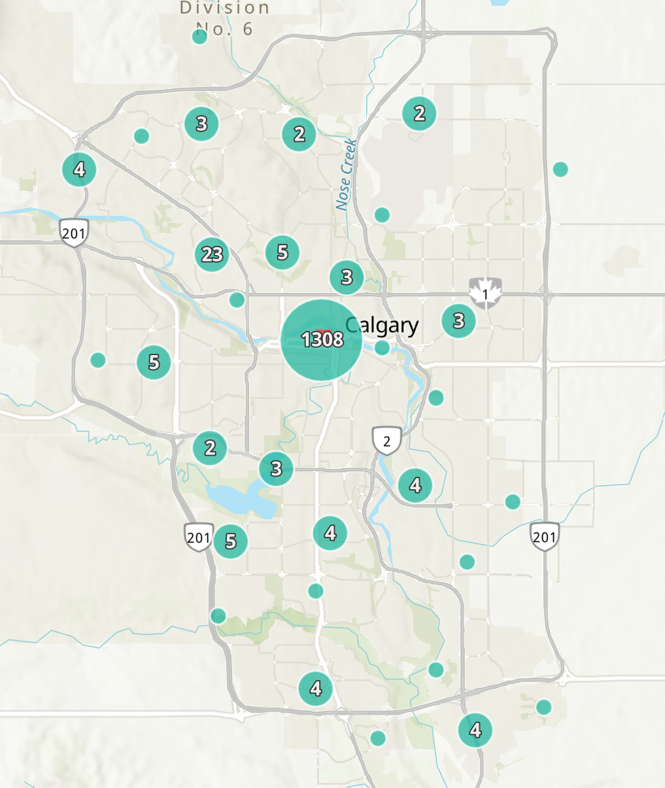
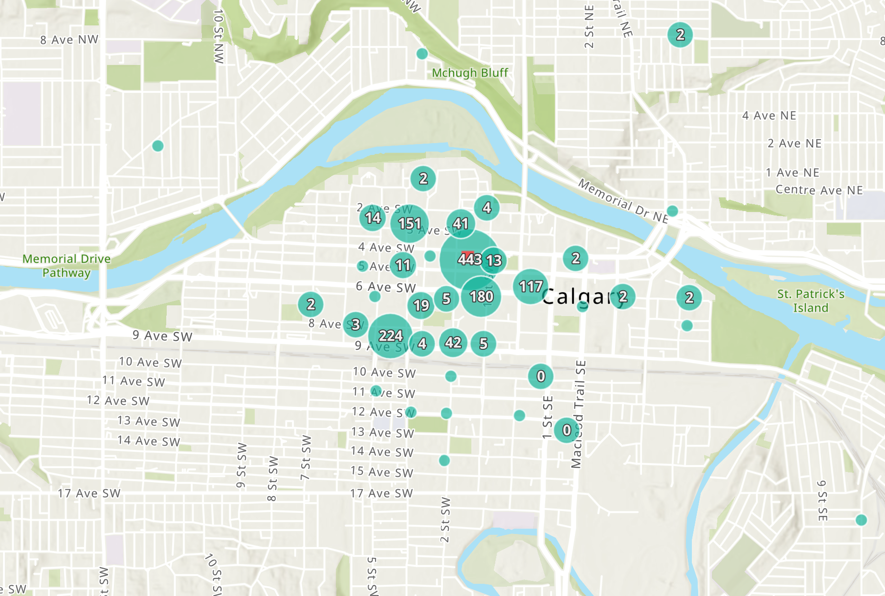

Status
Deceased and live birds and bats
Bats may be grounded for a variety of reasons including window collisions, poor weather, disorientation, or illness.
Live birds and bats who can be safely contained are taken to a wildlife rehabilitation clinic for appropriate diagnosis and treatment.
Show as table
Seasonal distribution
Records per month
Show as table
Records by species
Show as table
Reporting source
Reports on the Global Bird Collision Mapper® by CUSRT volunteers, the public, and other wildlife organizations
What these numbers don't show
CUSRT surveys the downtown core, typically in the early morning (5:00–9:00 AM). The maps below show the result: reports cluster downtown, with only a handful from the rest of the city. That does not mean birds are safe elsewhere. Birds strike windows on homes, schools and businesses across Calgary at all hours of the day. With no one out looking, the vast majority of that loss goes uncounted.
The reality: these records represent only a fraction of the actual injury and loss in Calgary.


Static screenshots of the Global Bird Collision Mapper®, taken October 30, 2026.
To see where window collisions are being reported across Calgary and in cities around the world, explore the up-to-date map on FLAP Canada's Global Bird Collision Mapper®.
Explore the mapFound an injured or deceased bird near a window?
Become a community scientist! Report your find to CUSRT and we'll log it on the Global Bird Collision Mapper®. From there it will appear on our local dashboard automatically.
Thank you for your contribution!
Want to get involved with bird and bat conservation?
Join CUSRT's volunteers on surveys across downtown Calgary, documenting window strike collisions and rescuing wildlife in need. Every record builds the data behind this dashboard and helps to advocate for a more bird-safe city.